处理器体系结构¶
《深入理解计算机系统》 - Randal E. Bryant - 第三版，第四章的读书笔记，本文中的所有代码可在GitHub仓库中找到
一个处理器支持的指令和指令的字节级编码称为它的指令集体系结构(Instruction-Set Architecture, ISA)。ISA在编译器编写者和处理器设计人员之间提供了一个概念抽象层，编译器编写者只需要知道允许哪些指令，以及它们是如何编码的；而处理器设计者必须建造出执行这些指令的处理器。
本章将简要介绍处理器硬件的设计：
- 首先定义一个简单的指令集“Y86-64”
- 然后介绍一种硬件控制语言(Hardware Control Language, HCL)，用于描述我们的处理器设计
- 先设计一个基于顺序操作、功能正确的Y86-64处理器
- 再创建一个流水线化的处理器
- 最后还会设计一些工具来研究和测试处理器设计
- 包括Y86-64的汇编器、Y86-64的模拟器(基于HCL文件)
Y86-64指令集体系结构¶
程序员可见的状态¶
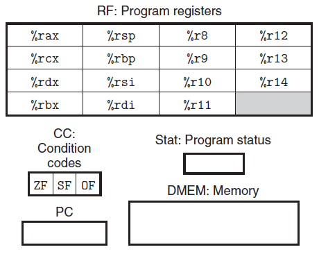
Y86-64的程序可以访问和修改程序寄存器、条件码、程序计数器和内存。这些状态相当于Y86-64的硬件接口，在接下来分析Y86_64指令的过程中，请时刻关注这些状态的变化。
Y86-64指令¶
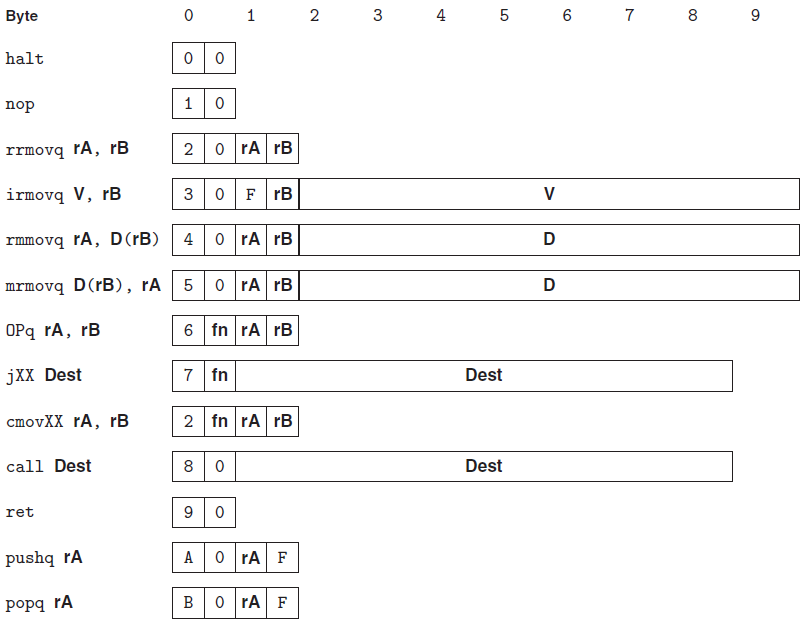
上图显示了Y86-64各指令的结构。虽然不同指令的长度和功能都不同，但是为了最大限度地复用硬件电路，每个指令都遵循相同的执行模式，详情可参考"将处理组织成阶段"章节
Y86-64程序¶
根据Y86-64指令规则，下面给出sum函数在Y86-64下的汇编代码：
long sum(long *start, long count)
{
long sum = 0;
while (count)
{
sum += *start;
start++;
count--;
}
return sum;
}
1 2 3 4 5 6 7 8 9 10 11 12 13 14 15 | |
1 2 3 4 5 6 7 8 9 10 11 12 13 | |
"Y86-64"汇编代码和"x86-64"汇编代码不同之处有：
- Y86-64需要将常数加载到寄存器，不能使用立即数
- 要实现从内存读取一个数值并将其与一个寄存器相加，Y86-64需要两条指令(第9~10行)，而x86-64只需要一条
addq指令(第7行)
逻辑设计和硬件控制语言HCL¶
要实现一个数字系统需要三个主要的组成部分：
- 计算对位进行操作的函数的组合逻辑
- 存储位的存储单元
- 控制存储器单元更新的时钟信号
组合电路¶
将很多的逻辑门组合成一个网，就能构建计算块(computational block)，称为组合电路(combinational circuits)。如何构建这些网有几个限制：
- 每个逻辑门的输入必须是下述选项之一：
- 一个系统输入
- 某个存储单元的输出
- 某个逻辑门的输出
- 两个或多个逻辑门的输出不能连接在一起
- 这个网必须是无环的，即网中不能有路径经过一系列的门而形成一个回路
时序电路¶
组合电路不存储任何信息。为了产生时序电路(sequential circuit)，也就是有状态并且在这个状态上进行计算的系统，我们必须引入按位存储信息的设备，包括：程序计数器、条件码、寄存器文件、内存等。时序电路是作为电路不同部分中的组合逻辑之间的屏障。
下图给出了程序计数器、状态码、寄存器文件和内存4个状态单元。组合逻辑(例如ALU)环绕着条件码寄存器，产生输入到条件码寄存器。而其他部分(例如分支计算和PC选择逻辑)又将条件码寄存器作为输入。
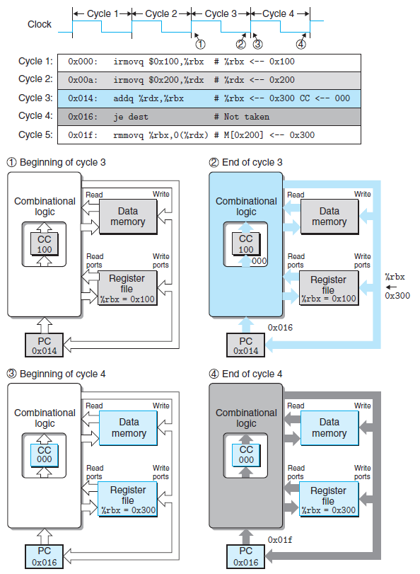
上图中蓝色部分表示addq指令相关单元，
- 在时钟周期3开始的时候(点1)
- 开始
addq指令的组合逻辑工作 - 状态单元更新为
irmovq指令的状态
- 开始
- 在时钟周期3末尾的时候(点2)
addq指令组合逻辑工作完成，为其状态单元准备好了新值- 此时状态单元还维持着
irmovq指令的状态
- 在时钟周期4开始的时候(点3)
- 开始
je指令的组合逻辑工作 - 状态单元更新为
addq指令的状态
- 开始
- 在时钟周期4末尾的时候(点4)
je指令组合逻辑工作完成，为其状态单元准备好了新值- 此时状态单元还维持着
addq指令的状态
HCL表达式¶
硬件描述语言(Hardware Description Language, HDL)是一种用来描述硬件结构，而不是程序行为的文本表示方式。我们的HCL语言只表达硬件设计的控制部分。将HCL代码与基本硬件单元的Verilog代码结合起来，就能产生HDL描述。
HCL主要包括以下几类语法形式：
- 布尔表达式
- 用于描述简单的组合电路，例如，下面的表达式描述了两个与门和一个或门的组合电路：
bool eq = (a && b) || (!a && !b);
- 用于描述简单的组合电路，例如，下面的表达式描述了两个与门和一个或门的组合电路：
- 整数表达式
- 用于描述复杂的组合电路，例如，下面的表达式描述了字级(多位数据)相等测试电路：
bool Eq = (A == B);
- 用于描述复杂的组合电路，例如，下面的表达式描述了字级(多位数据)相等测试电路：
- 情况表达式
- 用于描述多路复用器，例如，下面的表示式描述了一个四路复用器：
word Out4 = [ !s1 && !s0 : A; #00 !s1 : B; #01 !s0 : C; #10 1 : D; #11 ];
- 用于描述多路复用器，例如，下面的表示式描述了一个四路复用器：
- 集合关系
- 用于判断某个指令代码是否属于某一类指令代码
bool s1 = code in {2, 3}; #当code在集合{2, 3}中时，s1为1 bool s0 = code in {1, 3}; #当code在集合{1, 3}中时，s0为1
- 用于判断某个指令代码是否属于某一类指令代码
Y86-64顺序实现¶
将处理组织成阶段¶
为了统一，将Y86-64指令的执行过程分为五个阶段：
- 取值(fetch)
- 从内存中取出不同大小的指令，获取
rA，rB，valC，并计算valP
- 从内存中取出不同大小的指令，获取
- 译码(decode)
- 获取
valA和valB
- 获取
- 执行(execute)
- 计算
valE和状态码CC
- 计算
- 访存(memory)
- 读写内存，读出的内存值存于
valM
- 读写内存，读出的内存值存于
- 写回(write back)
- 将
valE或valM写入对应的寄存器
- 将
- 更新PC(PC update)
- 除了条件跳转指令和
ret外，都能在取指阶段确定下一条指令的地址call和jmp(无条件转移)，PC的更新值为valC- 其他指令，PC的更新值为
valP
- 除了条件跳转指令和
下面介绍不同类型的指令在各阶段的动作：
-
传送指令mov - 向寄存器或内存传递数据，不涉及条件码
阶段 rrmovq rA,rB irmovq V,rB rmmovq rA,D(rB) mrmovq D(rB),rA 取指 icode:ifun <- M1[PC]rA:rB <- M1[PC+1]
valP <- PC+2icode:ifun <- M1[PC]rA:rB <- M1[PC+1]valC <- M8[PC+2]
valP <- PC+10icode:ifun <- M1[PC]rA:rB <- M1[PC+1]valC <- M8[PC+2]
valP <- PC+10icode:ifun <- M1[PC]rA:rB <- M1[PC+1]valC <- M8[PC+2]
valP <- PC+10译码 valA <- R[rA] valA <- R[rA]valB <- R[rB] valB <- R[rB] 执行 valE <- 0+valA valE <- 0+valC valE <- valB+valC valE <- valB+valC 访存 M8[valE] <- valA valM <- M8[valE] 写回 R[rB] <- valE R[rB] <- valE R[rA] <- valM 更新PC PC <- valP PC <- valP PC <- valP PC <- valP -
算术运算指令OP - 对两个寄存器值进行算术运算，并修改条件码，不涉及内存访问
阶段 OPq rA, rB 取指 icode:ifun <- M1[PC]rA:rB <- M1[PC+1]valP <- PC+2 译码 valA <- R[rA] valB <- R[rB] 执行 valE <- valB OP valASet CC 访存 写回 R[rB] <- valE 更新PC PC <- valP -
栈操作指令 - 既要访问内存，又要访问寄存器，不涉及条件码
阶段 pushq rA popq rA 取指 icode:ifun <- M1[PC]rA:rB <- M1[PC+1]valP <- PC+2 icode:ifun <- M1[PC]rA:rB <- M1[PC+1]valP <- PC+2 译码 valA <- R[rA]valB <- R[%rsp] valA <- R[%rsp]valB <- R[%rsp] 执行 valE <- valB+(-8) valE <- valB+8 访存 M8[valE] <- valA valM <- M8[valA] 写回 R[%rsp] <- valE R[%rsp] <- valER[rA] <- valM 更新PC PC <- valP PC <- valP -
跳转指令 - 对程序计数器的处理方式与其他指令不同，其他指令PC更新值都是
valP阶段 jXX Dest call Dest ret 取指 icode:ifun <- M1[PC]valC <- M8[PC+1]valP <- PC+9 icode:ifun <- M1[PC]valC <- M8[PC+1]valP <- PC+9 icode:ifun <- M1[PC]valP <- PC+1 译码 valB <- R[%rsp] valA <- R[%rsp]valB <- R[%rsp] 执行 Cnd <- Cond(CC, ifun) valE <- valB+(-8) valE <- valB+8 访存 M8[valE] <- valP valM <- M8[valA] 写回 R[%rsp] <- valE R[%rsp] <- valE 更新PC PC <- Cnd?valC:valP PC <- valC PC <- valM
Y86-64流水线实现¶
流水线的通用原理¶
流水线化的一个重要特性就是提高了系统的吞吐量(throughput)，不过它会轻微地增加延迟(latency)。
例如，下图在没有流水化之前，下一条指令必须在320ps之后才能执行，因此限制了吞吐量(Throughput)。
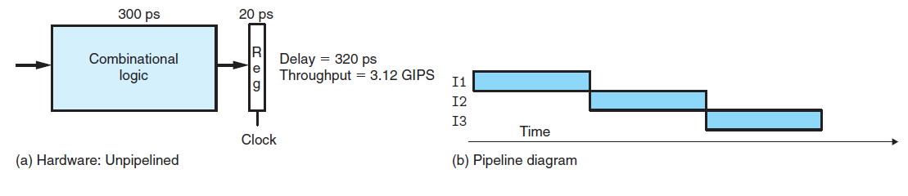
而在流水化之后，下一条指令只需要在120ps之后就能开始执行，大大提高了吞吐量。
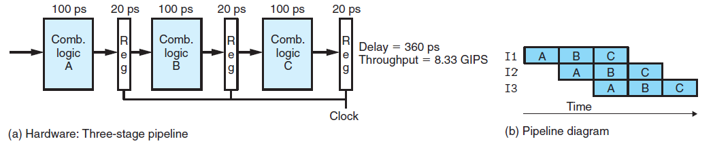
流水线的局限性¶
上面流水线的例子中，我们将计算分成三个相互独立的阶段，每个阶段需要的时间时原来逻辑的三分之一。不幸的是，会出现其他一些因素，降低流水线的效率。
- 不一致的划分
- 流水线的运行时钟由最慢的阶段决定，下图时钟周期增大为170ps，因此吞吐量下降
- 另外，由于时钟周期减慢了，延迟也增加到了510ps 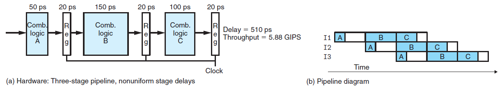
- 流水线过深，收益反而下降
- 通过增加流水线的阶段数可以提高吞吐量，但是会增加延迟 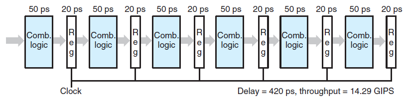
- 带反馈的流水线系统
- 在下图中，未流水线前，I1的结果是I2的输入
- 当流水线化后，I1的结果成为了I4的输入，这是不可接受的 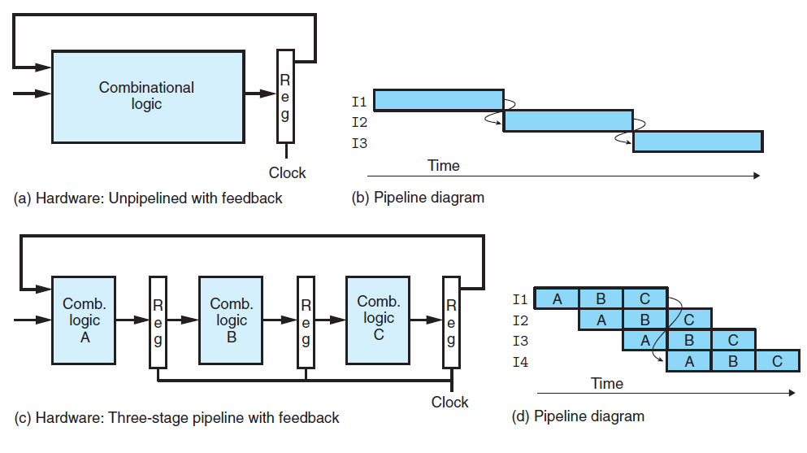
流水线的调整¶
相对于Y86-64的顺序实现，流水线实现必须解决更多的问题，例如：
-
数据冒险
- 当前指令要用到上一条指令的计算结果，而此计算结果还未完成
- 通过插入流水线寄存器或者转发，以提前获取计算结果
- 通过暂停当前指令，以获取正确的计算结果
- 当前指令要用到上一条指令的计算结果，而此计算结果还未完成
-
控制冒险
- 流水线需要提前“更新PC”阶段，以在下一个周期立即获得更新的PC值，而在此阶段可能还无法确定下一条指令的位置，如：条件跳转和
ret指令- 条件跳转指令，通过预测下一个PC值，先继续执行指令，如果预测错误，取消这些指令，并跳转到正确的位置执行
ret指令，通过暂停下一条指令，直到ret指令到达写回阶段，从内存中获取到了下一条指令的地址
- 流水线需要提前“更新PC”阶段，以在下一个周期立即获得更新的PC值，而在此阶段可能还无法确定下一条指令的位置，如：条件跳转和
-
异常
- Y86-64在三种情况下会发生异常：1)
halt指令，2)有非法指令和功能码组合的指令，3)取指或数据读写视图访问一个非法地址。- 由流水线中最深的指令引起的异常，优先级最高，以保证用户能获取最早的异常指令
- 流水线寄存器中的状态码
stat记录了某条指令的异常状态，以避免出现由于分支预测错误取出的指令造成的异常 - 当指令异常时，流水线控制逻辑会禁止更新条件码寄存器或内存数据，以防止其他指令对其修改
- Y86-64在三种情况下会发生异常：1)
Y86-64各阶段实现对比¶
PC选择和取指阶段¶
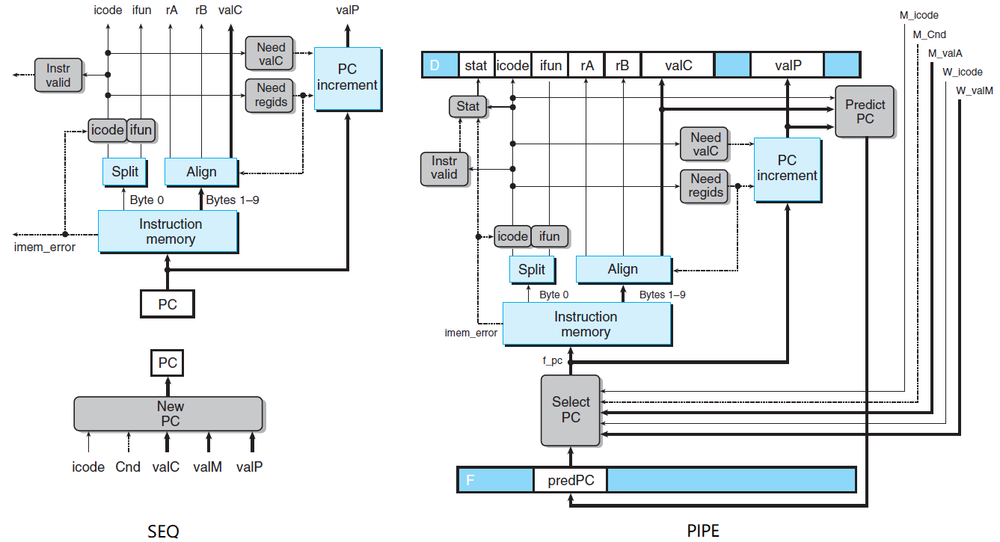
上图分别描述了SEQ和PIPE模型中的“更新PC”和“取指”阶段，
- 相同之处
- 用于从内存中读取指令和抽取不同指令字段的硬件单元相同
- 不同之处
- SEQ模型的“更新PC”阶段处在最后部分，可根据输入确定要更新的PC值，而无需预测
- PIPE模型提前了“更新PC”阶段，因此需要预测下一个PC值，PC选择逻辑在三个值中做选择：
- 在条件跳转指令预测失败时，从流水线寄存器M(访存之前)中读出下一条指令地址
M_valA - 在
ret指令进入写回阶段时，从流水线寄存器W(写回之前)中读出返回地址W_valM - 其他情况会使用存放在流水寄存器F(取指之前)中的PC的预测值
F_predPC
- 在条件跳转指令预测失败时，从流水线寄存器M(访存之前)中读出下一条指令地址
译码和写回阶段¶
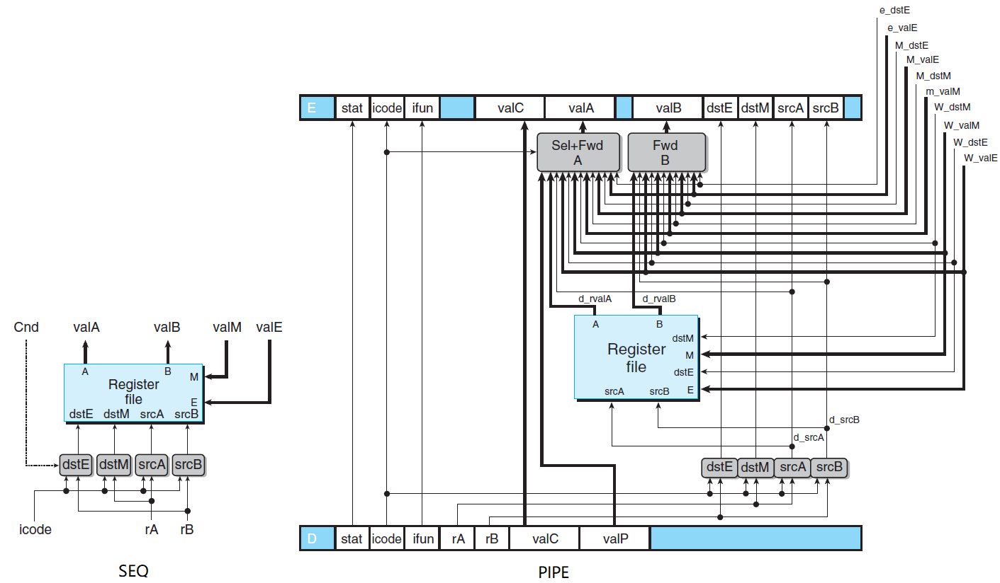
上图分别描述了SEQ和PIPE模型中的“译码”和“写回”阶段，
- 相同之处
dstE、dstM、srcA和srcB的概念是类似的
- 不同之处
- SEQ模型译码和写回阶段指的是同一个指令，因此译码阶段的
dstE和dstM信号，也能服务于写回阶段 - PIPE模型将
valP通过Sel合并为valA，因为没有指令即需要valP又需要valA的，此时需要根据不同的情况，选择不同的值存于流水线寄存器E(执行之前)中 - PIPE模型通过
Fwd A和Fwd B实现了转发逻辑，从而避免了部分数据冒险的问题 - PIPE模型中寄存器写的位置是由来自写回阶段的
dstE和dstM信号指定的，不是来自于译码阶段，因为此时要写的是当前正在写回阶段中的指令的结果
- SEQ模型译码和写回阶段指的是同一个指令，因此译码阶段的
执行阶段¶
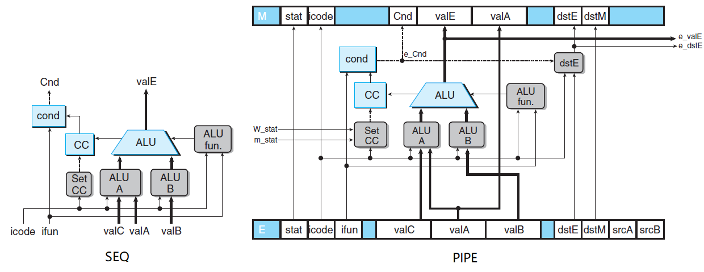
上图分别描述了SEQ和PIPE模型中的“执行”阶段，
- 相同之处
- 执行算术/逻辑运算，核心运算电路相同
- 不同之处
- SEQ模型只希望在执行
OPq指令时才设置条件码，因此bool set_cc = icode in { IOPQ }; - PIPE模型的“Set CC”逻辑添加了信号
m_stat和W_stat，当发生异常时，禁止对条件码的更新 - PIPE模型中，
e_valE和e_dstE作为转发源，指向译码阶段
- SEQ模型只希望在执行
访存阶段¶
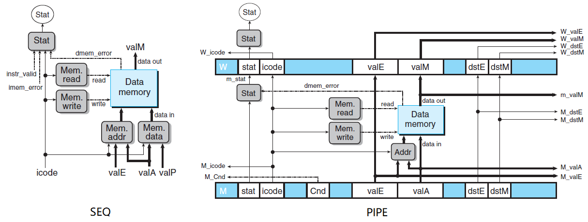
上图分别描述了SEQ和PIPE模型中的“访存”阶段，
- 相同之处
- 任务都是是读或者写程序数据
- 不同之处
- PIPE模型中没有SEQ模型中标号为“Data”的块，这个块是用来在数据源
valP和valA中进行选择的，在PIPE模型中已由译码阶段的“Sel+Fwd A”块完成了 - PIPE模型中访存阶段的许多信号被传递到较早的阶段
- PIPE模型中没有SEQ模型中标号为“Data”的块，这个块是用来在数据源
Y86-64仿真器实例¶
本章中的代码参考了"y86_64-tools"项目，基于C++，重新实现了Y86-64的三个主要工具：
- Y86-64汇编器
- 将Y86-64的汇编代码
.ys文件，编译为二进制Y86-64的机器指令.yo文件
- 将Y86-64的汇编代码
- HCL转换工具
- 将HCL格式的硬件描述文件，转换为对应的C代码
- Y86-64仿真器
- 一个可运行
.yo文件的Y86-64仿真器，可打印出程序运行前后寄存器和内存的变化
- 一个可运行
- 图形化界面
Y86-64汇编器¶
Y86-64汇编器通过Flex工具，分析出Y86-64的汇编代码中的内容，然后结合Y86-64的指令集体系结构，将汇编指令转换成对应的机器代码。Flex工具对Y86-64汇编器词法文件"yas.lex"的分析过程，可参考博文《Flex和Bison》。由于汇编器只需要将汇编代码和机器代码一一对应，并不涉及语法分析，因此不需要用到Bison工具。
例如，书4.1.5节中long sum(long *start, long count)的例子，通过汇编器可得到如下机器代码：
| # Execution begins at address 0
0x000: | .pos 0
0x000: 30f40002000000000000 | irmovq stack, %rsp # Set up stack pointer
0x00a: 803800000000000000 | call main # Execute main program
0x013: 00 | halt # Terminate program
|
| # Array of 4 elements
0x018: | .align 8
0x018: 0d000d000d000000 | array: .quad 0x000d000d000d
0x020: c000c000c0000000 | .quad 0x00c000c000c0
0x028: 000b000b000b0000 | .quad 0x0b000b000b00
0x030: 00a000a000a00000 | .quad 0xa000a000a000
|
0x038: 30f71800000000000000 | main: irmovq array,%rdi
0x042: 30f60400000000000000 | irmovq $4,%rsi
0x04c: 805600000000000000 | call sum # sum(array, 4)
0x055: 90 | ret
|
| # long sum(long *start, long count)
| # start in %rdi, count in %rsi
0x056: 30f80800000000000000 | sum: irmovq $8,%r8 # Constant 8
0x060: 30f90100000000000000 | irmovq $1,%r9 # Constant 1
0x06a: 6300 | xorq %rax,%rax # sum = 0
0x06c: 6266 | andq %rsi,%rsi # Set CC
0x06e: 708700000000000000 | jmp test # Goto test
0x077: 50a70000000000000000 | loop: mrmovq (%rdi),%r10 # Get *start
0x081: 60a0 | addq %r10,%rax # Add to sum
0x083: 6087 | addq %r8,%rdi # start++
0x085: 6196 | subq %r9,%rsi # count--. Set CC
0x087: 747700000000000000 | test: jne loop # Stop when 0
0x090: 90 | ret # Return
|
| # Stack starts here and grows to lower addresses
0x200: | .pos 0x200
0x200: | stack:
Yas Lexer parse is done
HCL转换工具¶
为了方便描述电路，书4.2节设计了一种硬件控制语言HCL。本文的"HCL表达式"章节介绍了四种HCL表达式类型，每种表达式都可以用一个C函数表达同样的逻辑。Flex工具通过词法文件"hcl.lex"可解析出HCL文件中的关键词，Bison工具通过语法文件"hcl.y"将这些关键词组合成不同的HCL表达式，最终生成对应的C代码。
例如，书4.2.2中的多路选择器"mux4.hcl"，可转换为如下的C代码：
#include <stdio.h>
#include <stdlib.h>
int code_val, s0_val, s1_val;
char **data_names;
long long gen_s1()
{
return ((code_val) == 2 || (code_val) == 3);
}
long long gen_s0()
{
return ((code_val) == 1 || (code_val) == 3);
}
long long gen_Out4()
{
return ((!(s1_val) & !(s0_val)) ? (atoi(data_names[0])) : !(s1_val) ? (atoi(data_names[1])) : !
(s0_val) ? (atoi(data_names[2])) : (atoi(data_names[3])));
}
int main(int argc, char *argv[]) {
if (argc < 6) {
printf("Please input five arguments: code, A, B, C and D, such as: ./mux4 0 1 2 3 4\n");
return -1;
}
data_names = argv+2;
code_val = atoi(argv[1]);
s1_val = gen_s1();
s0_val = gen_s0();
printf("Out = %lld\n", gen_Out4());
return 0;
}
Y86-64仿真器¶
在本文"程序员可见的状态"章节中，Y86-64对外接口只有：程序寄存器、条件码、程序计数器和内存。换句话说，我们只要保证这四个部分的行为和Y86-64一致，就可以通过软件模拟出一个Y86-64机器。当运行一个Y86-64程序时，仿真器需要保证程序寄存器和内存的变化，同真正的Y86-64机器一致。
我们通过三种方式实现了Y86-64仿真器：
- 逐个实现每条指令的行为 - YIS
- 通过
switch语句，对每条指令通过不同的代码模拟
- 通过
- 模拟Y86-64的顺序实现 - SEQ
- 结合"seq.hcl"硬件描述，用相同的代码实现所有的指令
- 模拟Y86-64的流水线实现 - PIPE
- 结合"pipe.hcl"硬件描述，用相同的代码实现所有的指令
例如，在YIS仿真器上运行书4.1.5的例子，可得到同样的结果：
...
Changes to registers:
%rax: 0x0000000000000000 0x0000abcdabcdabcd
%rsp: 0x0000000000000000 0x0000000000000200
%rdi: 0x0000000000000000 0x0000000000000038
%r8: 0x0000000000000000 0x0000000000000008
%r9: 0x0000000000000000 0x0000000000000001
%r10: 0x0000000000000000 0x0000a000a000a000
Changes to memory:
0x01f0: 0x0000000000000000 0x0000000000000055
0x01f8: 0x0000000000000000 0x0000000000000013